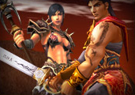
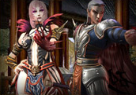
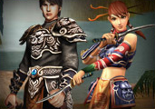
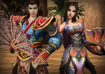
Grâce à leur habileté ainsi qu'à leur lourde armure, les Guerriers jouent un rôle important dans les combats au corps-à-corps. Ils aspirent à toujours plus de force physique et de sérénité. Selon leur spécialité, ils peuvent semer la terreur grâce à leurs armes à deux mains ou repousser toutes les attaques en utilisant habilement épée et bouclier.
Particulièrement prisé en PvE surtout en bas level, mais peut être également redoutable en PvP.
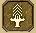
Aura de l'épéeSTR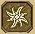
Moulinet à l'épéeSTR · DEX · VIT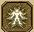
BerserkAucun bonus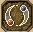
AccélérationSTR · DEX · VIT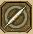
Triple lacérationSTRPrincipalement utilisé en PvP, mais peut être également utile en PvE. Corps puissant niveau G1 empêche de "tomber" en combat.
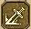
Corps puissantVIT · STR — Déf. ↑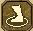
ChargeSTR · DEX · VIT — Zone + assomme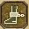
Attaque de l'espritSTR · VIT — éjecte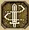
Coup d'épéeSTR · DEX · VIT — assommeLes Suras sont des combattants ayant reçu des pouvoirs magiques lorsqu'ils acceptèrent de laisser la graine du Mal pousser dans leur bras. Capables de manier leur épée au combat rapproché ou de provoquer des dommages à distance grâce à la magie. En se spécialisant, ils peuvent améliorer leurs sorts offensifs ou recevoir des sorts d'amélioration. Chaque spécialisation excelle dans sa spécialité PvP ou PvE.
Principalement PvE, mais redoutable en PvP à haut niveau. La Lame Enchantée augmente l'attaque et vole de la vie. Le Tourbillon du Dragon ignore la défense.
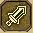
Lame EnchantéeINT — Att. ↑ + vol de vie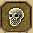
PeurAucun — Réduit dégâts physiques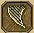
Tourbillon du DragonINT · DEX · STR — Zone + ignore déf.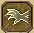
Toucher brûlantINT · DEX · STR — Frontal + ignore déf.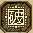
Contre-sortINT · DEX — Distance + supprime buffsPrincipalement PvP, mais utile en PvE. Attaques magiques à distance en rafale. Protection des Ténèbres réduit les dégâts magiques et physiques.
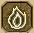
Protection des TénèbresINT — Déf. ↑ + réduit dégâts mag.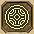
Attaque des TénèbresINT · DEX — Distance multi-cibles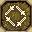
Orbe des TénèbresINT · DEX · VIT — Distance multi-cibles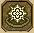
Esprit de flammesINT · VIT · STR — Attaque répétée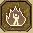
Attaque de flammesINT · STR · VIT — Zone + met à terreLes Ninjas sont de puissants assassins professionnels qui excellent dans les embuscades. Ils portent une armure légère pour privilégier la mobilité et la rapidité. Maîtres du combat à la dague et à l'arc selon leur spécialisation.
Très polyvalent — excellent en PvE et redoutable en PvP. L'Embuscade inflige des dégâts massifs dans le dos depuis l'état furtif.
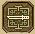
EmbuscadeDEX · STR — Dégâts ↑ de dos en furtif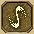
Dague filanteDEX · STR — Tourbillon + empoisonne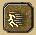
Attaque rapideDEX · STR — Téléportée + furtif ↑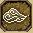
Brume empoisonnéeDEX · STR — Distance + empoisonne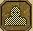
FurtifAucun — Invisibilité + dégâts ↑Redoutable en PvP, peut rencontrer quelques difficultés en PvE. Attaques à distance sur plusieurs cibles. Foulée de plume augmente la mobilité.
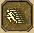
Foulée de plumeAucun — Vitesse déplacement ↑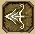
Flèche empoisonnéeDEX · STR — Distance + empoisonne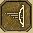
Tir à répétitionDEX · STR — Distance rafale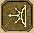
Pluie de flèchesDEX · STR — Zone à distanceLes Chamanes sont des sages qui utilisent la magie et les sorts. Leurs pouvoirs mystiques sont d'une efficacité redoutable tant au combat que dans le soutien. En fonction de leur spécialisation, elles peuvent augmenter leurs attaques ou se consacrer aux sorts de soins.
Très polyvalent — excellent en PvE et redoutable en PvP. Dégâts offensifs augmentés si le personnage porte un gong. Possède aussi une spécialisation Buff orientée soutien d'équipe.
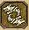
Rugissement du DragonINT · STR — Zone + feu + met à terre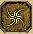
Aide du DragonINT — Attaque critique ↑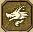
Dragon chassantINT · DEX — Frontal + feu durable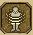
BénédictionINT · DEX — Réduit dégâts physiques reçus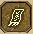
Talisman volantINT · STR — Distance multi-cibles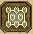
RefletINT · STR — Renvoie dégâts physiquesRedoutable en PvP, peut rencontrer des difficultés en PvE. Dégâts offensifs augmentés si le personnage porte un éventail. Le Soin restaure les PV et soigne les effets négatifs.
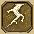
Invocation de FoudreINT · STR — Distance + assomme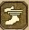
PromptitudeDEX — Vitesse déplacement + sort ↑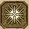
Jet de FoudreINT · DEX — Distance multi-cibles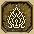
Attaque renforcéeINT · STR — Puissance d'attaque ↑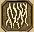
Griffe de FoudreINT · STR — Réaction en chaîne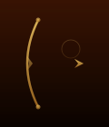
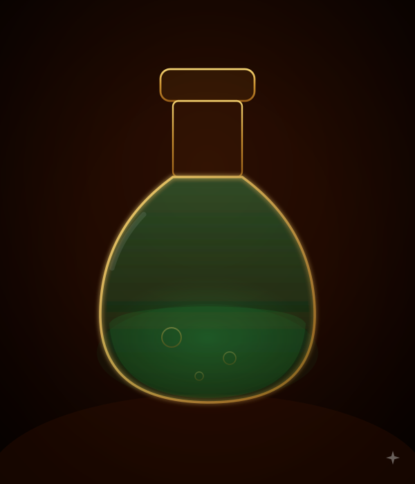
| Niv. | Mission | Récompenses spéciales |
|---|---|---|
| 2 | 10 Chiens errants affamés ou 5 Loups affamés | Armure selon classe +0 |
| 3 | 20 Chiens errants affamés ou 10 Loups affamés | Casque selon classe +0 |
| 4 | 15 Loups affamés ou 5 Loups alphas affamés | Bouclier de bataille +0 |
| 5 | 10 Loups alphas affamés ou 10 Loups bleus affamés | Objet aléatoire |
| 6 | 20 Loups bleus affamés ou 10 Sangliers sauvages affamés | Objet aléatoire |
| 7 | 10 Sangliers sauvages affamés ou 5 Loups alphas bleus affamés | Objet aléatoire |
| 8 | 20 Sangliers sauvages affamés ou 10 Loups alphas bleus affamés | Objet aléatoire |
| 9 | 15 Loups alphas bleus affamés ou 5 Sangliers rouges affamés | Objet aléatoire |
| 10 | 20 Loups alphas bleus affamés ou 10 Sangliers rouges affamés | Objet aléatoire |
| Niv. | Mission | Récompenses spéciales |
|---|---|---|
| 11 | 10 Sangliers rouges affamés ou 5 Ours affamés | 30% EXP · Objet aléatoire |
| 12 | 15 Ours affamés ou 10 Loups gris affamés | Objet aléatoire |
| 13 | 20 Loups gris affamés ou 5 Grizzly affamés | Objet aléatoire |
| 14 | 15 Grizzly affamés ou 5 Loups alphas gris affamés | Objet aléatoire |
| 15 | 20 Grizzly affamés ou 10 Loups alphas gris affamés | Objet aléatoire |
| 16 | 15 Loups alphas gris affamés ou 5 Tigres affamés | Objet aléatoire |
| 17 | 20 Loups alphas gris affamés ou 10 Tigres affamés | Objet aléatoire |
| 18 | 10 Tigres affamés ou 10 Ours noirs affamés | Objet aléatoire |
| 19 | 20 Ours noirs affamés ou 10 Ours bruns affamés | Objet aléatoire |
| 20 | 20 Ours bruns affamés ou 15 Arcs du Serment craintif | Objet aléatoire |
| Niv. | Mission | Récompenses spéciales |
|---|---|---|
| 21 | 20 Arcs du Serment craintif ou 10 Tigres blancs affamés | Objet aléatoire · Yang |
| 22 | 25 Tigres blancs affamés ou 10 Cdts du Serment craintif | Chaussures fil d'Or +0 · 10k–100k Yang |
| 23 | 20 Cdts du Serment craintif ou 40 Soldats T.Noire du Mal | Collier de jade +0 · 10k–100k Yang |
| 24 | 60 Soldats T.Noire du Mal ou 80 Maniacs du Vent Noir | Boucles d'oreilles jade +0 · 10k–100k Yang |
| 25 | 80 Forts Soldats Barbares ou 20 Joh-Hwans T.Noire | Bracelet de jade +0 · 10k–100k Yang |
| 26 | 80 Forts Minions Barbares ou 20 Pho-Hwangs T.Noire | Objet aléatoire · 10k–100k Yang |
| 27 | 30 Pho-Hwangs T.Noire ou 20 Forts Généraux Barbares | Objet aléatoire · 10k–100k Yang |
| 28 | 35 Joh-Hwangs T.Noire ou 30 Forts Généraux Barbares | Objet aléatoire · 10k–100k Yang |
| 29 | 30 Orcs d'élite ou 30 Faibles Singes Soldats | Coffre du dieu dragon · 10k–100k Yang |
| 30 | 40 Éclaireurs orcs d'élite ou 30 Faibles Singes lanceurs | Élixir du soleil (p) · 10k–100k Yang |
| Niv. | Mission | Récompenses spéciales |
|---|---|---|
| 31 | 50 Combattants orcs d'élite ou 45 Faibles Singes Combattants | Élixir de la lune (p) · 20k–100k Yang |
| 32 | 45 Rois scorpions ou 40 Faibles Singes généraux | 20k–100k Yang |
| 33 | 35 Orcs intrépides ou 30 Œils Volants | Collier d'ébène +0 · 20k–100k Yang |
| 34 | 40 Éclaireurs orcs intrépides ou 40 Rois scorpions | Bracelet d'ébène +0 · 20k–100k Yang |
| 35 | 40 Combattants orcs intrépides ou 20 Jeunes Araignées | Boucles d'oreilles ébène +0 · 20k–100k Yang |
| 36 | 30 Sorciers orcs intrépides ou 30 Jeunes venimeuses | 20k–100k Yang |
| 37 | 30 Généraux orcs intrépides ou 20 Jeunes hommes scorpions | 20k–100k Yang |
| 38 | 30 Hauts fanatiques ou 25 Araignées venimeuses | 20k–100k Yang |
| 39 | 30 Hauts arahans ou 30 Araignées venimeuses | 20k–100k Yang |
| 40 | 30 Combattants Hauts arahans ou 35 Archers scorpions | Élixir du soleil (p) · 20k–100k Yang |
| Niv. | Mission | Récompenses spéciales |
|---|---|---|
| 41 | 40 Hauts arahans élites ou 40 Épéistes serpents | Élixir de la lune (p) · 40k–150k Yang |
| 42 | 40 Hauts juges ou 45 Araignées rouges venimeuses | 40k–150k Yang |
| 43 | 40 Hauts Tourmenteurs ou 30 Araignées à griffes | 40k–150k Yang |
| 44 | 40 Hauts évocateurs ou 30 Soldats Araignées | 40k–150k Yang |
| 45 | 50 Orcs noirs intrépides ou 35 Forts bandits du désert | 40k–150k Yang |
| 46 | 30 Arahans bestiaux ou 40 Singes Soldats | Coffre du dieu dragon · 40k–150k Yang |
| 47 | 35 Combattants arahans bestiaux ou 40 Singes lanceurs | 40k–150k Yang |
| 48 | 40 Chefs arahans bestiaux ou 40 Singes Combattants | 40k–150k Yang |
| 49 | 40 Juges bestiaux ou 45 Forts Singes lanceurs | Élixir du soleil (p) · 40k–150k Yang |
| 50 | 40 Tourmenteurs bestiaux ou 45 Forts Singes Combattants | Élixir de la lune (p) · 40k–150k Yang |
| Niv. | Mission | Récompenses spéciales |
|---|---|---|
| 51 | 50 Soldats gren. arboricoles ou 30 Jeunes Araignées venimeuses | Coffre du dieu dragon · 60k–200k Yang |
| 52 | 50 Chefs gren. arboricoles ou 45 Araignées mortelles | 60k–200k Yang |
| 53 | 50 Croques-mitaines ou 50 Araignées rouges venimeuses furieuses | 60k–200k Yang |
| 54 | 50 Grands chefs gren. arbori. ou 30 Araignées à griffes (niv.56) | Collier larme céleste +0 · 60k–200k Yang |
| 55 | 50 Gal Grenouilles-taureaux ou 35 Soldats Araignées venimeuses | Bracelet larme céleste +0 · 60k–200k Yang |
| 56 | 80 Soldats démoniaques ou 30 Âmes furieuses | Boucles oreilles larme C. +0 · 60k–200k Yang |
| 57 | 80 Archers démons ou 40 Chiens infectés enragés | 60k–200k Yang |
| 58 | 80 Lanciers démoniaques ou 40 Pestiférés furieux | 60k–200k Yang |
| 59 | 80 Chamanes démoniaques ou 45 Combattants pestiférés furieux | Élixir du soleil (p) · 60k–200k Yang |
| 60 | 80 Vils Soldats démoniaques ou 40 Lanciers pestiférés furieux | Casque niv.60 selon classe +0 · 60k–200k Yang |
| Niv. | Mission | Récompenses spéciales |
|---|---|---|
| 61 | 60 Vils lanciers démoniaques ou 60 Archers pestiférés furieux | Élixir de la lune (p) · 60k–200k Yang |
| 62 | 60 Destructeurs ou 55 Glaces enchantées | Coffre du dieu dragon · 60k–200k Yang |
| 63 | 60 Golems de pierre ou 45 Baleines de glace | 60k–200k Yang |
| 64 | 60 Golems de pierre ou 45 Lions de glace | 60k–200k Yang |
| 65 | 60 Berserkers ou 40 Yétis | Chausses d'euphorie +0 · 60k–200k Yang |
| 66 | 60 Golems Géants de Pierre ou 45 Golems de glace | Armure niv.66 selon classe +0 · 60k–200k Yang |
| 67 | 60 Milliers Combattants ou 50 Tigres minions | 60k–200k Yang |
| 68 | 60 Ogres Guerriers ou 50 Esprits flammes | 60k–200k Yang |
| 69 | 60 Ogres Bouchers ou 50 Flammes | Élixir du soleil (p) · 60k–200k Yang |
| 70 | 60 Ogres Berserkers ou 55 Guerriers flammes | Élixir de la lune (p) · 60k–200k Yang |
| Niv. | Mission | Récompenses spéciales |
|---|---|---|
| 71 | 65 Esprits de la souche | Coffre du dieu dragon |
| 72 | 65 Esprits de la souche | — |
| 73 | 65 Dryades | — |
| 74 | 65 Esprits du saule pleureur | Arme niv.75 selon classe +0 (liée) |
| 75 | 65 Arbres maléfiques | Arme niv.75 selon classe +0 (liée) |
| 76 | 65 Esprits rouges de l'arbre | Coffre du dieu dragon · Arme niv.75 +0 (liée) |
| 77 | 65 Esprits rouges de la souche | — |
| 78 | 65 Dryades rouges | — |
| 79 | 65 Saules pleureurs rouges | Élixir du soleil (p) |
| 80 | 65 Arbres maléfiques rouges | Élixir de la lune (p) |
| Niv. | Mission | Récompenses spéciales |
|---|---|---|
| 81 | 70 Glaçons d'enfer | Coffre du dieu dragon |
| 82 | 70 Baleines de glace d'enfer | — |
| 83 | 70 Insectes de glace d'enfer | — |
| 84 | 70 Hommes de glace d'enfer | — |
| 85 | 70 Yétis d'enfer | — |
| 86 | 75 Golems de glace d'enfer | — |
| 87 | 75 Guerriers Setaou | — |
| 88 | 75 Chasseurs Setaou | — |
| 89 | 75 Voyantes Setaou | Élixir du soleil (p) |
| 90 | 75 Voyantes Setaou | Élixir de la lune (p) |
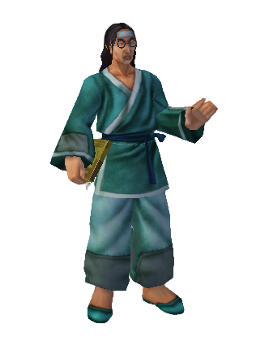
Chaegirab| Nom de la quête | Mission | Récompenses possibles |
|---|---|---|
| L'apparition des loups gris 1 | Tuer 10 Loups gris | 10k EXP + Peau de patte d'ours · 20k EXP + 5k Yang · 20k EXP + Fourrure de tigre · 80k EXP + 5k Yang · 10k Yang + Bile d'ours+ · 10k Yang + Fourrure de tigre · 30k EXP + 20k Yang |
| L'apparition des loups gris 2 | Tuer 30 Loups alphas gris | 10k EXP + Peau de patte d'ours · 20k EXP + 5k Yang · 20k EXP + Fourrure de tigre · 80k EXP + 5k Yang · 10k Yang + Bile d'ours+ · 10k Yang + Fourrure de tigre · 30k EXP + 20k Yang |
| À propos des tigres et des ours | Tuer 25 Tigres et 30 Ours | 10k EXP + Peau de patte d'ours · 20k EXP + 20k Yang · 20k EXP + Peau de tigre blanc · 50k EXP + Groin · 50k EXP + 50k Yang |
| L'Ouragan des loups bleus | Tuer 35 Loups bleus et 25 Loups alphas bleus | 30k EXP + 5k Yang + Griffe de loup · 5k Yang + Griffe de tigre · 20k Yang + Griffe de loup+ |
| Soucis concernant les villages | Tuer 40 Sangliers | 20k EXP + 40k Yang · 20k EXP + 50k Yang · 20k EXP + Bile d'ours+ · 5k Yang + Peau de patte d'ours · 5k Yang + Fourrure de tigre · 10k Yang + Bile d'ours+ |
| Soucis concernant les villages 2 | Tuer 30 Sangliers rouges | 10k EXP + 100k Yang · 20k EXP + 10k Yang · 20k EXP + 20k Yang · 20k EXP + 50k Yang · 30k EXP + 5k Yang · 30k EXP + Fourrure de loup+ · 10k Yang + Dent de sanglier sauvage |
| Brisez le Metin de Combat | Détruire 3 Metins de Combat | EXP · Yang · Groin · Bile d'ours+ |
| Détruisez le Metin de Bataille | Détruire 2 Metins de Bataille | EXP · Yang |
| Brisez le Metin de Cupidité | Détruire 2 Metins de Cupidité | EXP · Yang |
| La marche des ours affamés | Tuer 25 Ours noirs et 25 Grizzly | EXP · Yang |
| Nom de la quête | Mission | Récompenses possibles |
|---|---|---|
| Chasser l'armée blanche | Tuer 20 Cdts du Serment Blanc | EXP · Yang · Dent de barbare |
| L'attaque des Se-Rangs | Tuer 10 Se-Rangs | 30k EXP + Toile d'araignée · 30–100k EXP + Yang · 30–80k Yang + objets (Amulette d'orc+, Molaire d'orc, Poche d'œuf, Glande venin, Pince scorpion, Lame rouillée, Yeux d'araignée, Uniforme noir usé+, Dent d'orc+) |
| Donjon singes facile 1 | Tuer 30 Faibles Singes Soldats + 30 Faibles Singes lanceurs | EXP · Yang · Molaire d'orc |
| Donjon singes facile 2 | Tuer 15 Faibles Singes Combattants + 15 Faibles Singes généraux | EXP · Yang · Dard de scorpion |
| Donjon normal des Singes 1 | Tuer 30 Singes Soldats + 30 Singes lanceurs | 50–100k EXP + Yang · 10k–200k Yang + objets (Toile d'araignée, Molaire d'orc, Dent d'orc+, Yeux d'araignée, Glande venin, Uniforme noir usé+, Poche d'œuf) |
| Donjon normal des Singes 2 | Tuer 15 Singes Combattants + 15 Singes généraux | EXP · Yang · Queue de scorpion+ · Natte de ruban rouge |
| Brisez la Metin Noire | Détruire 2 Metins Noires | 20–100k EXP + Yang · 10–80k Yang + objets (Toile d'araignée, Lame rouillée, Pince de scorpion, Poche d'œuf, Uniforme noir usé+, Glande venin, Yeux d'araignée) |
| Brisez le Metin des Ténèbres | Détruire 3 Metins des Ténèbres | EXP · Yang · Glande venin d'araignée · Yeux d'araignée |
| Brisez la Metin de Jalousie | Détruire 2 Metins de Jalousie | EXP · Yang · Natte de ruban rouge |
| L'attaque des barbares | Tuer 30 Soldats Barbares + 30 Minions Barbares | EXP · Yang · Uniforme noir usé · Crème de visage |
| Le Vent Noir agité | Tuer 25 Jak-To + 25 To-Su du Vent Noir | EXP · Yang · Shuriken |
| Ils sèment le vent… | Tuer 4 Chuong | EXP · Yang · Dard de scorpion |
| La Grande Révolte des orcs 1 | Tuer 30 Orcs d'élite + 30 Éclaireurs orcs élites | 20–80k EXP + Yang · 10–80k Yang + objets (Uniforme noir usé, Shuriken, Natte ruban blanc+, Dent de barbare, Porcelaine brisée, Crème de visage, Morceau de gemme, Manuel d'Ésotérisme) |
| La Grande Révolte des orcs 2 | Tuer 20 Combattants orcs élites + 15 Sorciers orcs élites | EXP · Yang · Amulette d'orc+ · Lame rouillée · Pince de scorpion |
| Nom de la quête | Mission | Récompenses possibles |
|---|---|---|
| Le fléau des scorpions | Tuer 30 Rois scorpions + 20 Jeunes hommes scorpions | Yang · EXP · Manuel d'Ésotérisme+ · Médicament inconnu+ |
| Chunwa Bong-Ki | Tuer 45 Soldats gren. arboricoles + 35 Chefs gren. arboricoles | Yang · EXP |
| Les bras droits de l'Esprit du Tigre Jaune | Tuer 30 Gal grenouilles-taureaux | Yang · EXP · Peau de serpent · Corne de baleine |
| La compagnie de la mort 1 | Tuer 30 Soldats démoniaques + 20 Archers démons | Yang · EXP · Crinière flamboyante · Orbe de glace+ · Manuel d'Ésotérisme+ · Médicament inconnu+ |
| La compagnie de la mort 2 | Tuer 30 Lanciers démoniaques + 25 Chamanes démoniaques | Yang · EXP · Souvenir de Démon · Fourrure de Yéti · Orbe de glace+ |
| Le secret de la tour démoniaque | Tuer 45 Vils lanciers démoniaques | Yang · EXP |
| Les Maîtres de la Tour Démoniaque | Tuer 60 Vils chamanes démoniaques | Yang · EXP · Pelote |
| Les disciples des ténèbres 1 | Tuer 30 Fanatiques funestes + 30 Arahans funestes | Yang · EXP · Morceau de tissu+ |
| Les disciples des ténèbres 2 | Tuer 20 Combattants funestes + 25 Chefs arahans funestes | Yang · EXP · Morceau de tissu+ · Pattes de grenouille |
| Les disciples des ténèbres 3 | Tuer 40 Bourreaux funestes + 40 Invocateurs funestes | Yang · EXP · Morceau de tissu+ |
| Donjon difficile des Singes 1 | Tuer 30 Forts Singes Soldats + 30 Forts Singes lanceurs | Yang · EXP · Corne de baleine |
| Donjon difficile des Singes 2 | Tuer 15 Forts Singes Combattants + 15 Forts Singes généraux | Yang · EXP · Livre maudit+ · Livre maléfique |
| Elles ont 8 pattes (1) | Tuer 35 Jeunes Araignées venimeuses + 35 Araignées mortelles | Yang · EXP · Feuille · Langue de grenouille · Médicament inconnu |
| Elles ont 8 pattes (2) | Tuer 35 Jeunes Araignées venimeuses + 35 Araignées mortelles | Yang · EXP · Feuille · Langue de grenouille · Shuriken+ · Talisman inconnu+ |
| Elles ont 8 pattes (3) | Tuer 35 Araignées rouges furieuses + 35 Araignées à griffes (niv.56) | Yang · EXP · Feuille · Langue de grenouille · Queue de serpent · Shuriken+ · Talisman inconnu+ |
| Elles ont 8 pattes (4) | Tuer 40 Soldats Araignées venimeuses | Yang · EXP · Feuille · Talisman inconnu+ · Queue de serpent · Gemme de Démon+ |
| La colère de l'araignée 1 | Tuer 40 Jeunes araignées | Yang · EXP · Feuille · Morceau de tissu+ · Pattes d'araignée |
| La colère de l'araignée 2 | Tuer 40 Araignées venimeuses | Yang · EXP · Feuille · Gemme du Démon · Pattes d'araignée |
| Brisez les metins d'âme | Détruire 2 Metins d'Âme | Yang · EXP · Pattes d'araignée · Symbole de Guerrier |
| Brisez le Metin de l'Ombre | Détruire 2 Metins de l'Ombre | Yang · EXP · Pattes d'araignée · Croc de tigre de combat · Talisman inconnu+ · Morceau de tissu |
| Détruisez la Metin de Force | Détruire 2 Metins de Force | Yang · EXP · Crinière flamboyante · Souvenir de Démon |
| Propriétaire du mont Sohan ? | Tuer 35 Hommes de glace furieux + 30 Yétis | Yang · EXP · Livre maudit+ · Corne de baleine |
| Les monstres des glaces ! | Tuer 45 Glaces enchantées | Yang · EXP · Livre maléfique |
| La glace fondra un jour | Tuer 25 Golems de glace | Yang · EXP |
| Nom de la quête | Mission | Récompenses possibles |
|---|---|---|
| Esprit des flammes ! Son identité | Tuer 50 Esprits flammes | Yang · EXP · Souvenir de Démon+ · Épingle de cheveux déco. · Bile d'ours · Pince de scorpion · Crème de visage |
| Les guerriers de flamme | Tuer 60 Guerriers flammes | Yang · EXP · Souvenir de Démon+ · Épingle de cheveux déco. · Bile d'ours · Pince de scorpion · Crème de visage · Poche d'œuf d'araignée · Molaire d'orc · Groin |
| Réduisez le nombre de tigres de combat | Tuer 60 Tigres minions combattants + 40 Tigres de combat | Yang · EXP · Épingle de cheveux déco. · Bile d'ours · Pince de scorpion · Crème de visage · Poche d'œuf · Molaire d'orc · Groin |
| Explorer Doyyumhwan | Tuer 45 Tigres minions combattants | Yang · EXP · Porcelaine brisée · Peau de tigre blanc · Pelote · Dard de scorpion · Fourrure de loup+ · Fourrure de tigre |
| Études des flammes | Tuer 40 Flammes | Yang · EXP · Épingle de cheveux déco. · Crème de visage · Molaire d'orc · Groin |
| Examinez les arbres fantômes | Tuer 30 Arbres fantômes | Yang · EXP · Symbole du Roi sage · Gants du Roi sage · Cape de l'évadé · L'Art de guerre Wu-Zi · L'Art de guerre Sun-Zi · WeiLiao Zi · Pierre d'âme |
| Le secret de la forêt fantôme | Tuer 30 Dryades + 40 Esprits de la souche | Yang · EXP · Symbole du Roi sage · Gants du Roi sage · Cape de l'évadé · L'Art de guerre Wu-Zi · L'Art de guerre Sun-Zi · WeiLiao Zi · Pierre d'âme · Haricot Zen |
| Niv. | Mission |
|---|---|
| 1 | Tuer 20 Archers Barbares en ≤30 min → Dessin de cheval après 10h (100.000 Yang). La compétence d'équitation n'est activée qu'à ce moment là. |
| 2 | Se déplacer aux points indiqués — Joan · Pyungmoo · Yongan |
| 3 | Se déplacer aux points indiqués — Joan · Pyungmoo · Yongan |
| 4 | Se déplacer aux points indiqués — Joan · Pyungmoo · Yongan |
| 5 | Se déplacer aux points indiqués — Joan · Pyungmoo · Yongan |
| 6 | Se déplacer aux points indiqués — Désert de Yongbi · Vallée de Seungryong |
| 7 | Se déplacer aux points indiqués — Désert de Yongbi · Vallée de Seungryong |
| 8 | Se déplacer aux points indiqués — Désert de Yongbi · Vallée de Seungryong |
| 9 | Se déplacer aux points indiqués — Mont Sohan · Doyyumhwan |
| 10 | Se déplacer aux points indiqués — Mont Sohan · Doyyumhwan |
| Niv. | Mission |
|---|---|
| 11 | Tuer 100 Archers serpent ou Archers scorpion en ≤2h → Livre cheval de combat après 12h (500.000 Yang). En groupe : le chef doit posséder la quête. |
| 12 | Tuer 5 Bo — Bakra · Bokjung · Jayang |
| 13 | Tuer 5 Chuong — Bakra · Bokjung · Jayang |
| 14 | Tuer 10 Généraux orcs élites — Vallée de Seungryong |
| 15 | Tuer 10 Orcs noirs — Vallée de Seungryong |
| 16 | Tuer 10 Bourreaux funestes — Vallée de Seungryong |
| 17 | Tuer 10 Araignées à griffes — Kuahlo Dong |
| 18 | Tuer 20 Hors-la-loi du Désert — Désert de Yongbi |
| 19 | Tuer 10 Golems de glace — Mont Sohan |
| 20 | Tuer 20 Tigres de combat — Doyyumhwan |
| Niv. | Nom de la quête | Récompenses | PNJ |
|---|---|---|---|
| 1 | Bienvenue sur Metin | 300 EXP · 200 Yang · 4× Potion rouge (p) · Bijoux en bois +0 | Automatique |
| 2 | Lettre du Garde du Village | 550 EXP · 1.000 Yang · 15× Potion rouge (p) | Automatique |
| 3 | Aidez la Marchande | 850 EXP · 5.000 Yang · 20× Potion bleue (p) | Automatique |
| 4 | Un nouvel arôme | 1.000 EXP · 500 Yang | Marchande |
| 5 | L'apprentissage | 4 pts de compétences | Automatique |
| 6 | La mission du Forgeron | 5.000 EXP · 1.500 Yang · Fourrure de loup+ | Automatique |
| 6 | La Marchande | 1.500 EXP · 1.000 Yang | Marchande |
| 7 | Le dîner | 1.000 EXP · 1.500 Yang | Marchande |
| 7 | Encore une autre faveur | 1.500 EXP · 5.000 Yang | Automatique |
| 7 | Le mariage de la fille | 4.000 EXP · 5.000 Yang · Arme +3 (selon classe) | Octavio |
| 8 | Ingrédients pour le médicament | 3.000 EXP · 5.000 Yang · Fourrure de loup | Baek-Go |
| 9 | Une lettre du Forgeron | 4.000 EXP · 3.000 Yang | Forgeron |
| 9 | Parlez au Garde du Village | 9.500 EXP · 2.000 Yang | Automatique |
| 10 | Allez voir le capitaine | 9.500 EXP · 2.000 Yang | Automatique |
| 10 | Trouvez Soon | 7.000 EXP · 10.000 Yang | Aranyo |
| 10 | Aidez Soon | 6.000 EXP · 2.000 Yang | Soon |
| Niv. | Nom de la quête | Récompenses | PNJ |
|---|---|---|---|
| 11 | La commande d'armure | 26.000 EXP · 15.000 Yang · Groin | Magasin d'armures |
| 12 | Allez parler au Capitaine | 24.000 EXP · 3.500 Yang | Automatique |
| 12 | Le meilleur livre de cuisine | 12.000 EXP · 5.000 Yang · Griffe de loup | Octavio |
| 13 | Trouvez une fourrure de loup | 15.000 EXP · Armure niv.9 (selon classe) | Vieille dame |
| 14 | Détruisez les pierres metin | 48.000 EXP · 10.000 Yang · Pierre d'esprit | Automatique |
| 15 | Trouvez Yu-Hwan le musicien | 45.000 EXP · 2.000 Yang | Automatique |
| 15 | Le gâteau de riz | 26.000 EXP · 10.000 Yang | Ah-Yu |
| 16 | Capturez l'espion | 100.000 EXP · 5.000 Yang | Automatique |
| 16 | Trouvez la hache d'or | 36.000 EXP · 10.000 Yang · Ornement | Forgeron |
| 17 | Le cadeau pour Chaegirab | 40.000 EXP · 10.000 Yang · Livre de compétence ou 20.000 EXP · 20.000 Yang · Pépite d'or | Wonda-Rim |
| 18 | Trouvez l'épingle à cheveux | 60.000 EXP · 10.000 Yang · Ticket d'équitation | Marchande |
| 19 | Trouvez mon frère | 122.000 EXP · 5.000 Yang | Mirine |
| 20 | Tuez Mi-Jung du serment blanc | 122.000 EXP · 20.000 Yang · Bracelet d'argent | Gardien du village |
| Niv. | Nom de la quête | Récompenses | PNJ |
|---|---|---|---|
| 21 | Cherchez les matériaux | 122.000 EXP · 20.000 Yang · Arme 20+3 (selon classe) | Magasin d'armes |
| 22 | Le gardien malade | 50.000 EXP · 12.000 Yang · Chaussures de fil d'or +4 · 5× Potion violette (g) | Automatique |
| 23 | Tuez Eun-Jung du serment blanc | 150.000 EXP · 25.000 Yang · Collier d'or +4 | Gardien du village |
| 25 | La cavalerie lourde | 150.000 EXP · 30.000 Yang · Boucles d'oreilles d'or | Capitaine |
| 25 | Vaincre les Jin-Hees | Anneau de couple | Vieille dame |
| 26 | Le déserteur | 35.000 EXP · 17.500–35.000 Yang · Rose jaune | Yang-Shin |
| 27 | Tuer les Goo-Paes | 300.000 EXP · 10.000 Yang | Ariyoung |
| 27 | Détruisez la metin noire | 1.000.000 EXP · 15.000 Yang · Natte de ruban rouge · Ornement | Capitaine |
| 28 | Le soucis d'Ah-Yu | 850.000 EXP ou 500.000 EXP · 40.000 Yang | Ah-Yu |
| 29 | La porcelaine brisée | 600.000 EXP · 38.000 Yang | Yonah |
| 30 | Les Lances | 300.000 EXP · 20.000 Yang | Ah-Yu |
| 30 | Le secret des Pierres Metin | 1.500.000 EXP · 20.000 Yang | Uriel |
| Niv. | Nom de la quête | Récompenses | PNJ |
|---|---|---|---|
| 31 | Ramenez les fleurs | 400.000 EXP · 12.000 Yang | Huahn-So |
| 32 | Les pages du livre secret 1 | 1.250.000 EXP · 50.000 Yang · Larme de la Déesse | Uriel |
| 32 | Les pages du livre secret 2 | 1.250.000 EXP · 50.000 Yang · 10× Drapeau blanc | Uriel |
| 33 | La nouvelle arme | 200.000 EXP · 20.000 Yang · Arme 25+3 | Forgeron |
| 34 | La nouvelle armure | 200.000 EXP · 20.000 Yang · Armure 26+3 | Forgeron |
| 35 | La hache de Deokbae | 400.000 EXP · 30.000 Yang | Deokbae |
| 36 | Le frère disparu | 600.000 EXP · 35.000 Yang | Mirine |
| 37 | L'araignée à clochette | 700.000 EXP · 30.000 Yang | Yu-Rang |
| 38 | Le Livre du Temple | 850.000 EXP · 20.000 Yang | Soon |
| 39 | Le Gâteau de riz perdu | 900.000 EXP · 25.000 Yang | Yu-Rang |
| 40 | Les pages du livre secret 3 | 2.000.000 EXP · 50.000 Yang · Bénédiction de Vie | Uriel |
| 40 | Les pages du livre secret 4 | 2.750.000 EXP · 50.000 Yang · Bénédiction Magique | Uriel |
| 40 | Les pages du livre secret 5 | 750.000 EXP + 2.000.000 EXP (niv.47) · 50.000 Yang · Bénédiction Magique | Uriel |
| 40 | Tuez les Généraux du vent noir | 1.000.000 EXP · Anneau de Langage 30j | Capitaine |
| Niv. | Nom de la quête | Récompenses | PNJ |
|---|---|---|---|
| 41 | La demande du Marchand | 1.100.000 EXP · Collier d'or · Bracelet d'or · Boucles d'oreilles d'or | Marchand Ambulant |
| 42 | Grouic Grouic | 600.000 EXP · 500.000 Yang · 3× Carpe amour grillé | Octavio |
| 43 | Allez voir Wonda-Rim | 1.250.000 EXP · 32.000 Yang | Wonda-Rim |
| 44 | La carte au trésor de Soon | 1.400.000 EXP · 25.000 Yang · Casque 41 (selon classe) | Soon |
| 45 | Le trésor du chasseur | 1.500.000 EXP · 35.000 Yang · 20× Cape de bravoure | Yang-Shin |
| 46 | Laissez les morts reposer en paix | 1.700.000 EXP · 30.000 Yang · 3× Diamant | Maître Dragon |
| 47 | L'étable a des ennuis | 1.800.000 EXP · Livre de quête difficile | Yonah |
| 47 | Les pages du livre secret 6 | 3.000.000 EXP · 75.000 Yang · Bénédiction du Dragon | Automatique |
| 47 | Les pages du livre secret 7 | 3.000.000 EXP · 75.000 Yang | Automatique |
| 47 | Les pages du livre secret 8 | 3.000.000 EXP · 70.000 Yang · 20× Cape de bravoure | Automatique |
| 48 | Un médicament pour Balso | 1.900.000 EXP · 30.000 Yang | Balso le traître |
| 49 | Œil d'araignée spéciaux | 2.100.000 EXP · 20.000 Yang | Octavio |
| 50 | Les pages du livre secret 9 | 5.000.000 EXP · 125.000 Yang · Symbole du Roi sage | Uriel |
| 50 | Les pages du livre secret 10 | 5.500.000 EXP · 137.500 Yang · Gants du Roi sage | Automatique |
| 50 | Les pages du livre secret 11 | 6.000.000 EXP · 150.000 Yang · Médaille du Dragon | Automatique |
| Niv. | Nom de la quête | Récompenses | PNJ |
|---|---|---|---|
| 51 | Le secret de la porcelaine céladon | 2.500.000 EXP · 35.000 Yang · Chaussures de jade +3 | Yonah |
| 52 | Une bonne nuit de sommeil | 3.800.000 EXP · 270.000 Yang · Manuel (selon classe) | Capitaine |
| 53 | La porcelaine vert pâle | 3.000.000 EXP · 30.000 Yang | Yonah |
| 54 | Les provisions | 3.750.000 EXP · 125.000 Yang · Bouclier tigre singe +3 | Capitaine |
| 55 | Les pages du livre secret 12 | 7.500.000 EXP · 162.500 Yang | Automatique |
| 55 | Les pages du livre secret 13 | 14.500.000 EXP · 175.000 Yang · Livre du Chef | Automatique |
| 55 | La situation de Balso | 4.000.000 EXP · 65.000 Yang | Balso le traître |
| 56 | Soutien de dispositif de guerre | 4.500.000 EXP · 50.000 Yang · 3× Attaque perçante · 3× Attaque critique | Capitaine |
| 57 | Trouvez des pattes de grenouilles | 5.000.000 EXP · 50.000 Yang | Magasinier |
| 58 | Rencontrez l'espion | 5.500.000 EXP · 50.000 Yang · 3× Gardon rouge | Capitaine |
| 59 | Bingsu? | 6.000.000 EXP · 70.000 Yang · Parchemin de guerre | Taurean |
| 60 | Temple obscur | 7.000.000 EXP · 70.000 Yang · Livre du chef | Soon |
| 60 | Nation obscure I | 12.000.000 EXP · 175.000 Yang · 10× Parchemin d'exorcisme · Fleurs · Lilas | Uriel |
| 60 | Nation obscure II | 9.700.000 EXP · 3× Lecture concentrée · Toile d'araignée · Glande venin | Uriel |
| Niv. | Nom de la quête | Récompenses | PNJ |
|---|---|---|---|
| 66 | Le journal | 9.500.000 EXP · 3× Parchemin de Bénédiction · Queue de scorpion | Uriel |
| 66 | Lettre anonyme | ≤30 min : 4.500.000 EXP · 200.000 Yang + objets · Sinon : 4.000.000 EXP · 100.000 Yang | Gardien du village |
| Niv. | Nom de la quête | Récompenses | PNJ |
|---|---|---|---|
| 72 | La découverte | 12.350.000 EXP · Anneau d'EXP (1h) · Morceau de tissu · Médicament inconnu | Lee Chung |
| 72 | Trésor glacé | 40.000.000 EXP · 225.000 Yang · 3× Élixir du chercheur · Gants de voleur · Médaille de Chance | Lee Chung |
| 75 | Dans la grotte | Pierre de sang | Seon-Hae |
| 75 | Journal intime d'une légende | 89.000.000 EXP · 1.200.000 Yang · Journal légendaire | Heuk-Young |
| 78 | Quartz de l'enfer rouge | 36.000.000 EXP · Élixir du soleil (g) · Orbe de bénédiction · Médaille d'attention 4h | Lee Chung |
| 78 | Dernier élément | 48.000.000 EXP · 230.000 Yang · Élixir de la lune (g) · Cuivre magique · Livre du chef | Lee Chung |
| 80 | Le Sombre Masque de Bois | 120.000.000 EXP · 3.000.000 Yang ou 70.000.000 EXP · 7× Médaille du Dragon ou pack objets du dieu dragon | Soon |
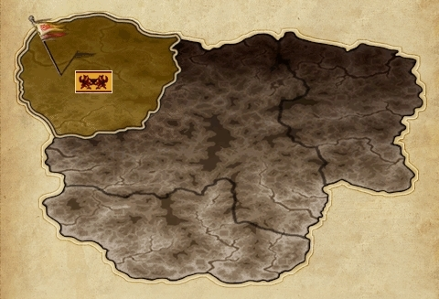
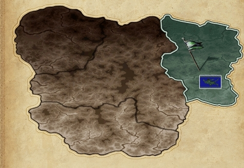
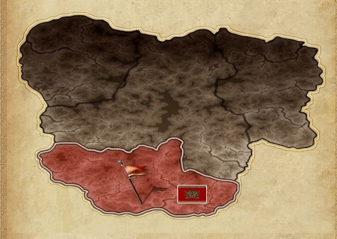
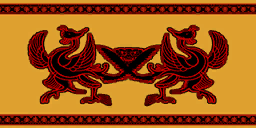
ChunjoLes trois premiers villages correspondent chacun à un empire : Joan pour Chunjo, Pyungmoo pour Jinno, Yongan pour Shinsoo. Ce sont les cartes de départ du jeu — on y trouve toutes les boutiques essentielles : Forgeron, Magasin d'armes, Magasin d'armures, Marchande et Magasinier.
Premier village ➔ Deuxième village · Vallée de Seungryong · Désert de Yongbi
Le désert de Yongbi est une carte classique comportant de nombreux monstres et pierres Metin ainsi qu'un boss. Moins rentable en EXP que la Vallée de Seungryong, elle propose cependant trois types de pierres Metin différentes. La taille de la carte les rend plus difficiles à trouver.
Deuxième village ➔ Désert de Yongbi ➔ Jungsun Dong · Sangsun Dong · Donjon des araignées 1 · Grande Vallée
La vallée de Seungryong est une carte classique comportant de nombreux monstres et un boss. C'est une zone très importante pour les joueurs de bas niveaux car elle permet de gagner de l'expérience rapidement.
Premier village ➔ Vallée de Seungryong ➔ Temple Hwang · Grotte de l'Exil · Désert de Yongbi
Le Mont Sohan est une carte classique comportant de nombreux monstres et pierres Metin ainsi qu'un boss. Cette zone permet de rejoindre le Bois enchanté et d'accéder à l'observatoire de Nemere.
Vallée de Seungryong ➔ Mont Sohan ➔ Bois enchanté · Doyyumhwan · Observatoire de Nemere
Doyyumhwan, aussi appelée Terre de Feu, est une carte hostile peuplée de créatures de feu, de tigres de combat et d'ogres. Zone idéale pour les joueurs entre 60 et 75 souhaitant progresser rapidement en EXP et récupérer des drops intéressants.
Mont Sohan ➔ Doyyumhwan ➔ Bois Rouge · Bois Enchanté
Le Bois Rouge est une carte classique comportant peu de monstres différents ainsi que des pierres Metin. Zone très intéressante car les pierres Metin y font tomber pour la première fois des Capes de bravoure, des Anneaux d'expérience et des Gants de voleur. Pas de veine sur la carte.
Doyyumhwan ➔ Bois Rouge ➔ Grande Vallée · Grotte de l'Exil
La Grotte de l'Exil comporte deux types de créatures distincts : les monstres de glace (versions renforcées de ceux du Mont Sohan) et les Setaou, communément appelés mercenaires. Les deux types sont agressifs. À noter : la capacité Peur des Sura AM annule l'aggro des créatures de glace mais pas des Setaou.
Bois Rouge · Map Orc ➔ Grotte de l'Exil ➔ Grotte de l'Exil 2
La Tour des Démons est une instance présente depuis la création du jeu. Elle est composée d'un rez-de-chaussée et de 8 étages. Tous les monstres sont de type mort-vivant associés à l'élément Obscurité. De nombreux monstres se réincarnent en version plus puissante une fois tués.